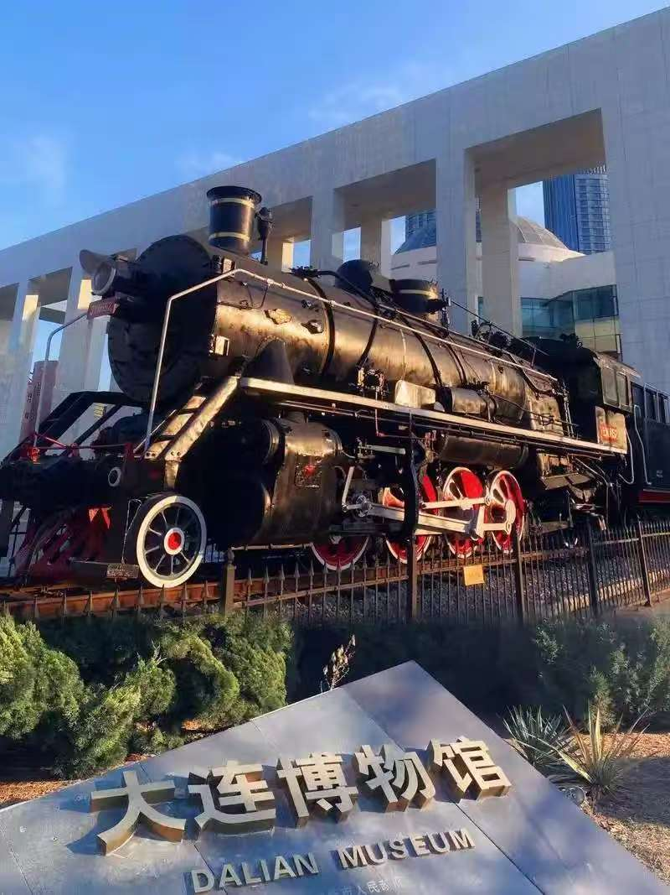

大连博物馆，原名大连现代博物馆。占地面积2.16万平方米、建筑面积3.04万平方米、展览面积1.9万平方米，临展区面积近4000平方米，是一座地方综合性博物馆。
2002年3月，大连博物馆对外开放，截止2022年末，大连博物馆馆内藏品达32984件，其中珍贵文物达150件。被评为“全国科普教育基地”、“辽宁省爱国教育基地”和“大连市党员思想教育基地”。在2017年“5·18国际博物馆日”活动中，大连博物馆被正式授予为第三批“国家一级博物馆”。
大连博物馆重要藏品中，近代藏品部分主要反映清代洋务运动时期、沙俄侵占时期、日俄战争、日本四十年殖民统治、大连解放和中苏共管、大连民俗品等；现代部分主要反映解放初期的大连、改革开放后发展成就等实物资料。其中，反映大连改革开放以来的代表性物品数量较多。
由于在近代大连遭受外来入侵，一些近代外国艺术品馆内也有收藏，包括有日本书画和瓷器等。
“这里陈列的不是过去的遗存，而是未来的种子。”今天，大连博物馆依旧保持初心，致力于向公众传播大连城市历史文化，努力为公众提供多元化的公共文化服务，成为人们了解近代大连开埠以来城市历史的窗口，文化艺术的殿堂。
 ← 返回大连地图